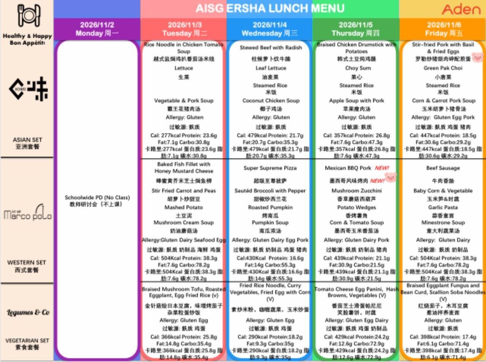

Er Sha · November 2026
只儲存在這部裝置，尚未啟用同步。
在有記錄的 iPad 建立家庭，再於其他裝置輸入同一家庭碼。首次連接會備份並合併本機記錄；已有的家庭評價和確認安排優先保留。本機新評價可補上舊喜好缺少的星數，之後仍可隨時修改。
家庭碼：
家庭碼用於解密，請保管好，並只分享給家人。中斷同步不會刪除本機記錄。
逐餐評價
本週備選
同一天兩人都有「要」的餐即可備選，套餐可以相同或不同。各日期內按兩人合計星數排序，未評星的喜好仍保留。每週只確認一組，每人 1 份，由你決定。
此為家庭選餐安排，尚未向 Aden Food 下單。
Nutrition and allergens are transcribed as printed. Food images are AI-generated menu visualizations. 营养和过敏原按原图录入；食物图片为 AI 写实示意。
